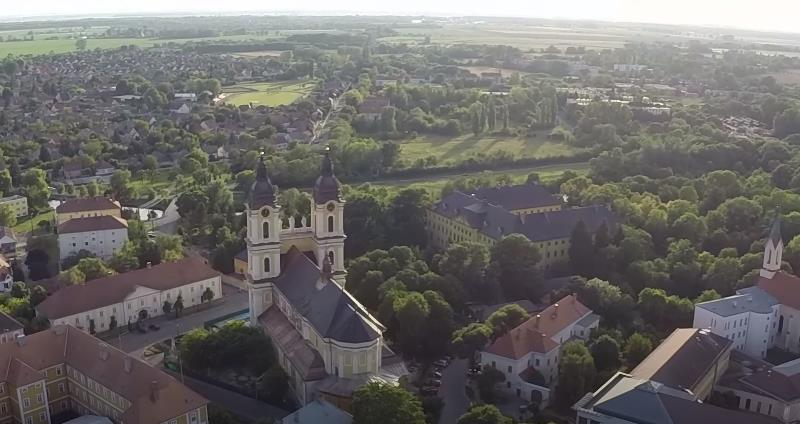
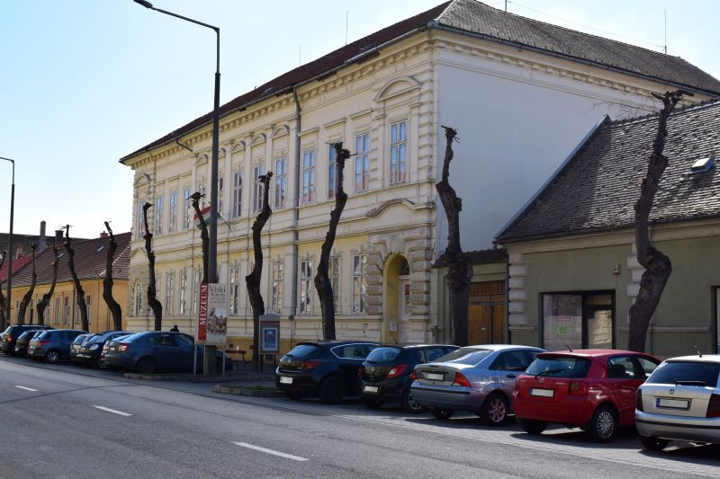
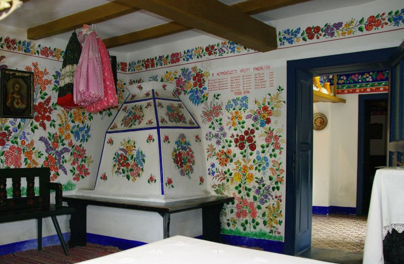
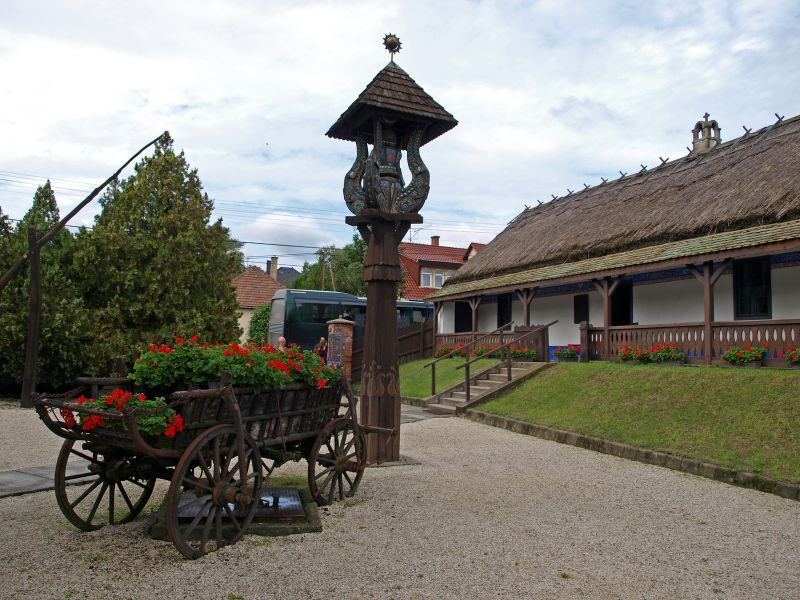
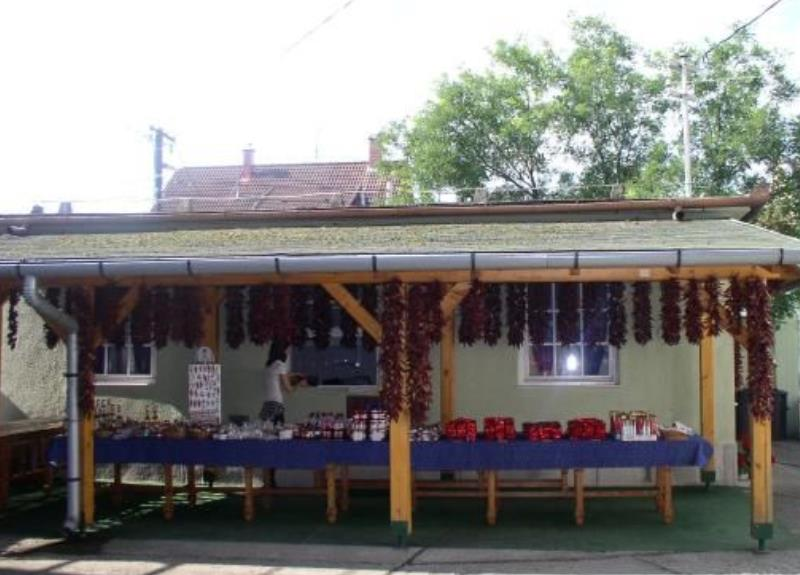
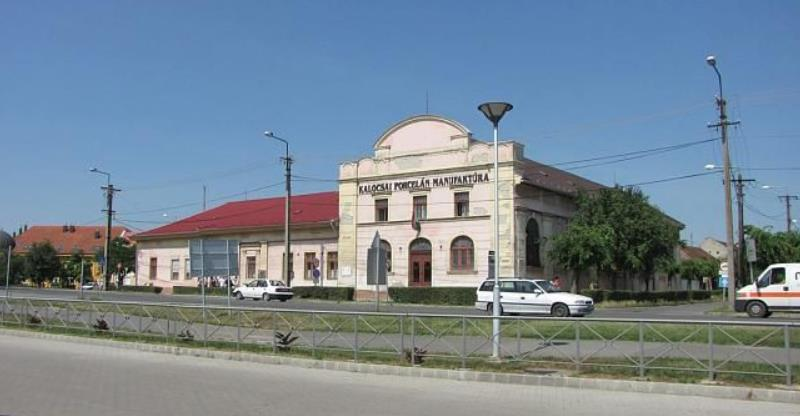
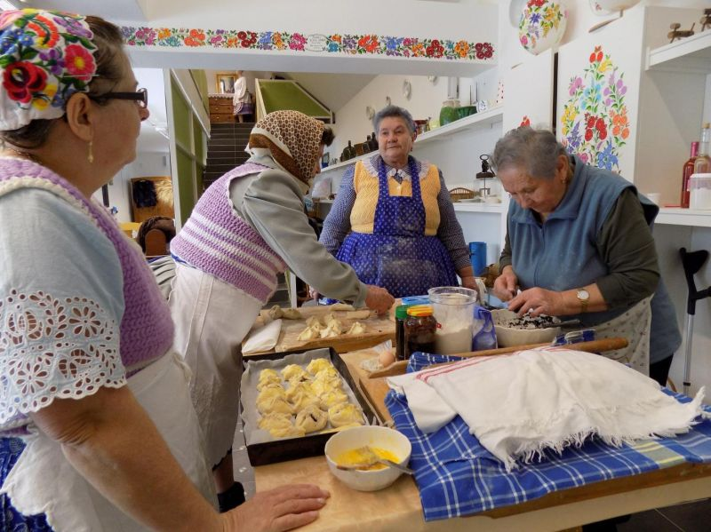
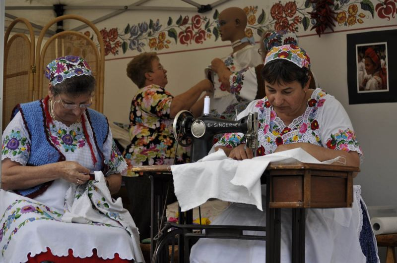
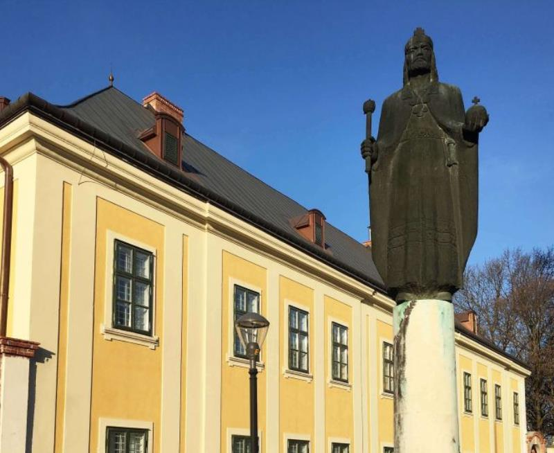

【美景】
匈牙利的辣椒全世界闻名，考洛乔是匈牙利最重要的辣椒种植区之一。 匈牙利特产委员会将考洛乔的“笔迹刺绣”和考洛乔的辣椒粉纳入匈牙利特产。 考洛乔总教区由一千多年前的圣史蒂芬一世国王建立。 考洛乔的辣椒粉之家和辣椒粉博物馆展示了辣椒粉以前的生产和使用工具其工作过程。
【美食】
Goulash牛肉炖汤
Libamáj 鹅肝
Lángos特色油饼
Toltott Kaposzta 圆白菜肉丸
Halászlé 鱼汤
Ujhazi Tyukhuslevesi 家常老鸡汤
Kurtoskalacs 烟囱卷面包
Egri Bikavér埃格尔公牛血葡萄酒
考洛乔
考洛乔是位于匈牙利南部的城镇，距离首都布达佩斯约88公里，面积53平方公里，人口17,165，其中约七成居民信奉天主教。该地区位于多瑙河沼泽泛滥的平原地区。城市的名字可以追溯到1750年代。考洛乔城市的年龄与匈牙利国家相同。1529年的8月15日考洛乔被土耳其人占领。1882年底修通了铁路。工业发展始于1960年代。自1700年代初以来，考洛乔一直是该国最重要的辣椒种植区之一。2014年，匈牙利特产委员会将考洛乔的“笔迹刺绣”和考洛乔的辣椒粉纳入匈牙利特产。

景点：维斯基卡罗利博物馆 该馆收集的资料多样化，包括纺织品、家具、陶器、档案照片、木材、垫子、铁、玻璃以及其它在民间文化的特有器皿。其中最有价值，最有趣的部分是纺织品。该纺织品的收藏为我们保留了19世纪中叶至今的考洛乔民间艺术和不同时代的服饰的记忆。

景点：民间艺术乡村别墅 这座城市的民族学区域是近250年沿海最具有历史意义的``沿海房屋''，具有考洛乔的典型民俗建筑设计，被视为民间艺术和乡村别墅。
 房子的室内设计是原始布局，街道前部的“干净”的房间也显示了考洛乔的震撼力。除了各种家具外，后客厅还展示了典型的考洛乔刺绣的不同版本。

景点：辣椒屋 辣椒粉之家和辣椒粉博物馆展示了辣椒在被做成辣椒粉之前的生产过程和使用的工具。 手工加工、干燥、打碎、“碾”和磨的某些阶段保留了传统形式，并同时保证了优质辣椒的生产-真正的匈牙利特产。

景点：瓷器画家工厂 瓷器绘画厂成立于1971年，工厂致力于将数百年来举世闻名的考洛乔多彩民俗艺术及其周围的风土人情传统与瓷器绘画艺术相结合。参观者可以在考洛乔瓷器厂，看到从瓷器铸造到窑炉的所有生产过程。

景点：传统主义者之家 在考洛乔中心计划的框架内，随着大主教花园接待楼的翻新，建立了传统主义者之家，该中心在考洛乔传统保护协会的主持下运作。


景点：大主教博物馆 考洛乔总教区由圣史蒂芬一世国王建立，他的第一任大主教是阿斯特里克。2017年初，对大教堂进行了大规模的翻新和考古发掘，并在6年后再次向游客开放。除了阿斯特拉切姆内和周围的教堂景点外，还有几处具有主要地区意义的古迹：圣史蒂芬教堂、女修道院、圣伊姆雷教堂、前犹太教堂等。

景点：大教堂图书馆 大主教宫殿东翼的华丽图书馆内的大主教亚当的私人图书馆，藏有近两万册书籍。 考洛乔主教管区的大主教所在地，最初有一座防御工事的城堡，该城堡在18世纪转变为巴洛克式城堡。这座两层楼的建筑也具有古典主义元素，始建于1775年。大主教官邸的主立面，除西翼外，于1780年完工。大教堂图书馆是一所公共图书馆，是考洛乔•凯斯凯梅特大主教管区的中心图书馆。
景点：大主教教堂 始建于1734年，巴洛克式大教堂，有着一千多年的历史，高耸的塔楼吸引了前往的游客。1795年7月18日，雷电袭击了北塔屋顶，严重损坏了塔的石材和主立面。大教堂在几次较小的翻修中获得了20世纪的模样，大教堂的塔楼有七个铃铛，教堂下面是的地下室。